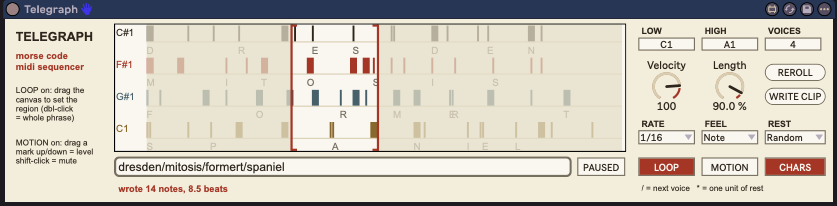

28
telegraph
Morse-code MIDI sequencer — type words, and their dits and dahs become notes; slashes stack words as parallel voices.

about
Type a phrase and press Return: it is translated to Morse and every dit (1 unit) and dah (3 units) becomes a MIDI note, locked to Live's transport. / ends one voice and starts the next, so dresden/mitosis/formert is three lanes playing at once, each on its own random note drawn between Low and High. is one unit of rest, and the Rest menu respaces every hit. The idea comes from Audio Spices' Ginger* (an audio gate); this is a MIDI reworking, so the audio-only controls are gone and the pitch scheme is its own.
- type
- midi effect
- built by
- claude
- state
- v0.3
- folder
- Telegraph Device
quick start
- 01Drop
Telegraph.amxdon a MIDI track in front of an instrument. - 02Click the text field, type a word, press Return. Marks appear on the canvas, one lane per voice, with each lane's note name at the left.
- 03Start Live's transport — it only runs while Live is playing.
- 04Add voices with slashes:
STELLAR/**EARTHplays both words from the start, EARTH two units late. - 05Don't like the notes? Reroll. Want it as a clip? Select a Session slot and press Write Clip.
controls
message
Up to 64 characters and 8 voices. Case doesn't matter.
- Text fieldA-Z 0-9 . ? = - + @ ! ' :
- The phrase. Press Return to compile it. Anything without a Morse code is skipped. Retyping a phrase resets its per-hit edits and loop region.
- /
- Ends the text for this voice and moves to the next. Every voice starts at the beginning; they play in parallel. The pattern loops at the length of the longest voice and shorter voices rest until it comes round.
- *
- One unit of rest (one 1/16 if Rate is 1/16). At the start of a section it delays that voice; it also works mid-section.
pitch
- Low / HighMIDI note
- The range the random notes are drawn from. Defaults C2 and C4.
- Voices1 - 16
- How many different notes are drawn. Voice k plays note k; with more
/sections than Voices the notes wrap round. - Rerollbutton
- New random notes, and new gaps when Rest is Random. The seed is saved with the Set, so a Set recalls the same pattern.
time
- Rate1/4 / 1/8 / 1/16 / 1/32
- The length of one unit.
- FeelNote / Trip / Dot
- Straight, triplet or dotted units.
- RestMorse / 0 - 16 / Random
- Morse = standard gaps: 1 unit inside a letter, 3 between letters, 7 between words. A number puts that many units between every hit, inside letters and between them alike — AM at 2 plays dit, 2 rests, dah, 2 rests, dah, 2 rests, dah. A space adds one more rest. Random gives each gap its own length from 0 to 16; the gaps are fixed per roll, not re-drawn on every pass.
- Length5 - 100 %
- Note length as a fraction of the dit or dah.
- Velocity1 - 127
- Base velocity; each hit's level scales it.
- PLAY / PAUSEDtoggle
- Automatable. Pausing stops the notes; position comes from the song position, so resuming is already on the grid.
canvas
- LOOPtoggle
- On: drag across the canvas to set the region that repeats (all voices at once). Double-click = whole phrase.
- MOTIONtoggle
- On: drag a mark up or down to set its level (relative drag, about two levels per pixel); shift-click mutes it. Muted marks draw as outlines.
- CHARStoggle
- Shows each letter under its group of marks.
- Write Clipbutton
- Writes the phrase — or the loop region when LOOP is on — into the highlighted Session slot, with levels and mutes. The status line reports the note count and length.
workflow
hocketed words
Give each voice a word of a different length and set Rest to Random: long, sparse, interlocking lines. Turn LOOP on and drag out a bar or two that works, then Write Clip.
keep it in key
The random notes are chromatic. Put Live's Scale device after Telegraph, or narrow Low/High and Reroll until it lands.
drums
Set Low/High across a Drum Rack's pads and use one short word per voice; Rest 0 - 2 gives tight patterns, Morse gives the classic lopsided ones.
gotchas
- Nothing plays unless Live's transport is running.
- Press Return after typing — clicking away does not compile the phrase.
- Reroll changes the notes and the Random gaps together.
- Rest = Random with a long phrase gets very long (up to 16 units between every hit); use LOOP to pick out a usable stretch.
/and*are control characters here, so the Morse slash is not available. Commas and semicolons can't be typed into a Max text field.- After replacing the .amxd, delete the device from the track and drag it on again.
rebuilding
python3 build_telegraph.py in the device folder regenerates Telegraph.maxpat and a frozen Telegraph.amxd (the script is embedded at build time — no Max freeze step). node test_telegraph_node.js tests the compiler, voices, Rest modes, seeding and save/restore.
telegraph.js is one v8ui: canvas plus pattern compiler, never in the timing path. It writes unit -> pitch level length triples into a coll; the clock is plain Max — plugsync~ beats → floor(beats × units per beat) → change → start + (g % length) → coll → zl iter 3 → makenote.
State (text, seed, loop region, per-hit level and mute) is saved in the v8ui's blob parameter and restored into the text field.